지역별 설치 현장
전국 각 지역에 설치된 무인자판기 현장 사진입니다. 지역을 눌러 골라 보실 수 있고, 사진을 누르면 크게 보입니다. 매장 여건에 따라 기종·대수·배치가 달라집니다.
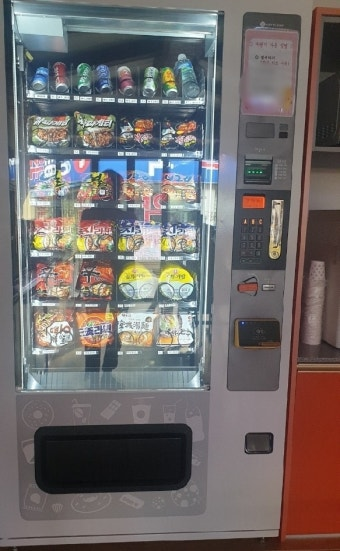
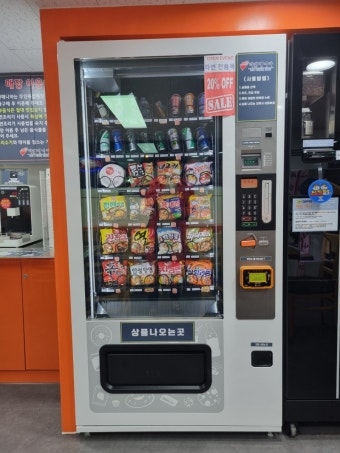
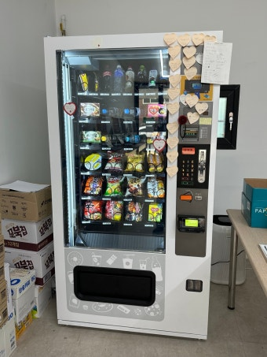
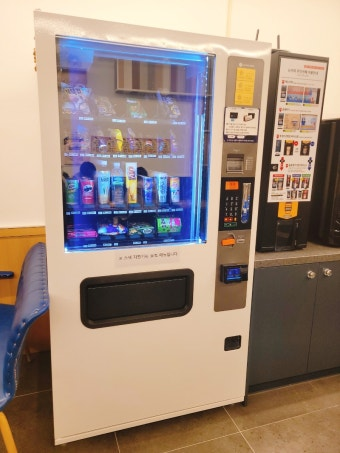
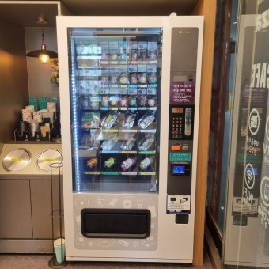

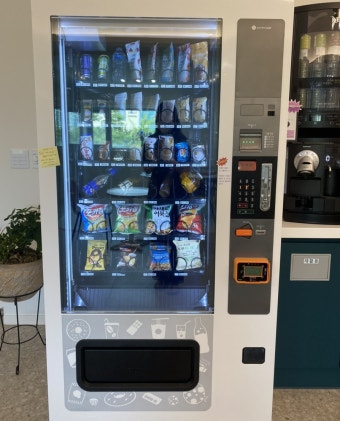

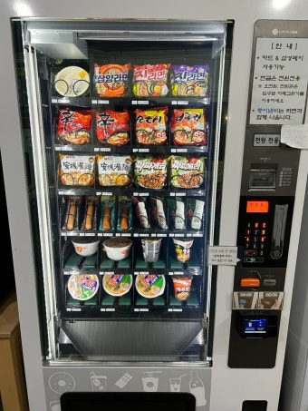
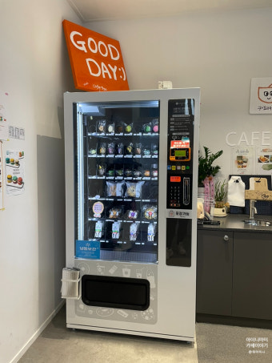
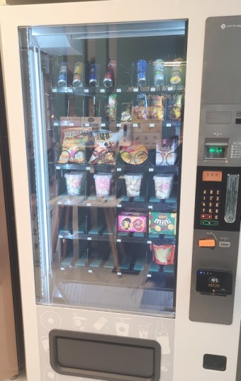
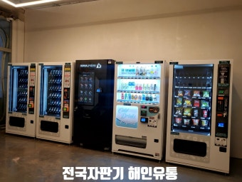
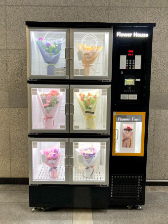
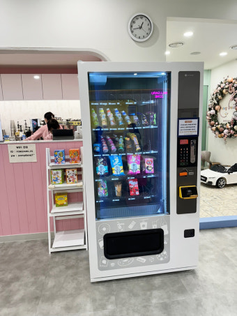
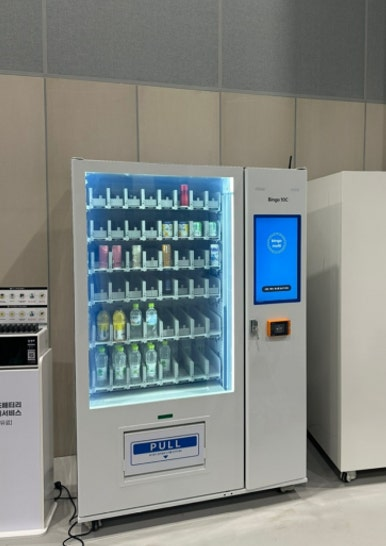
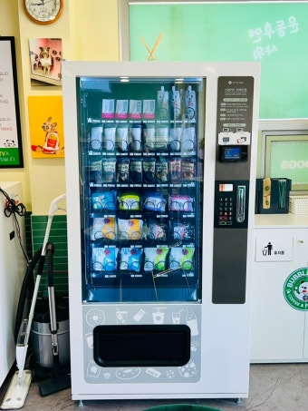
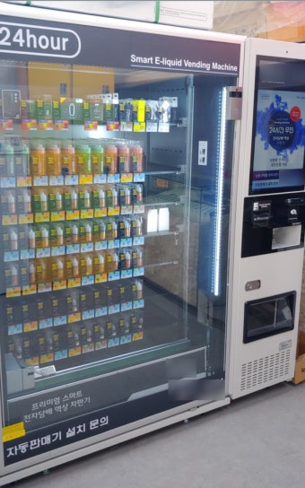
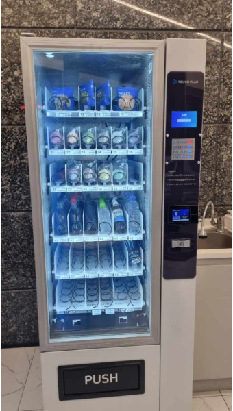
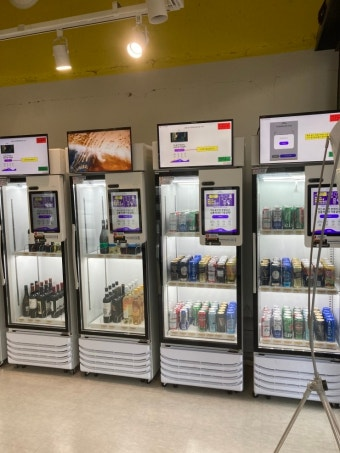
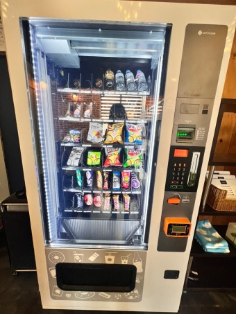
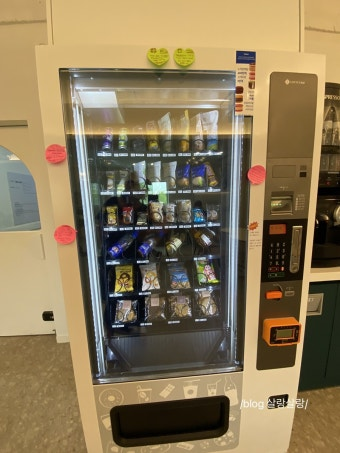
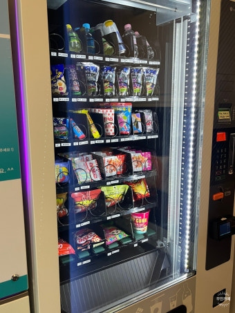
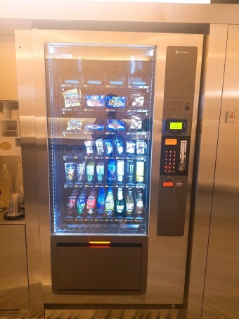
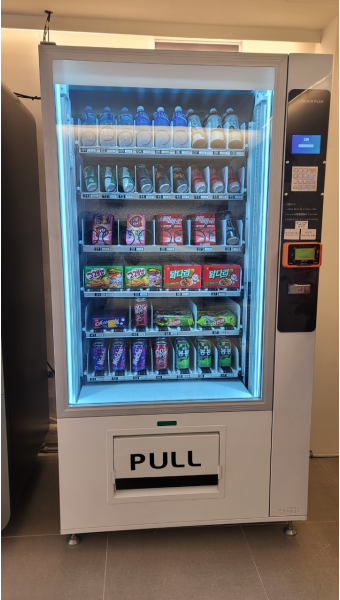
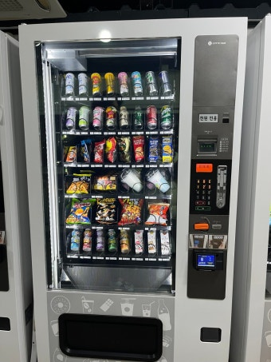
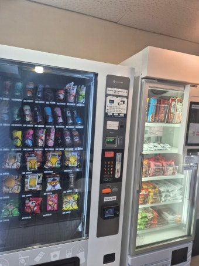
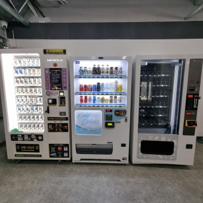
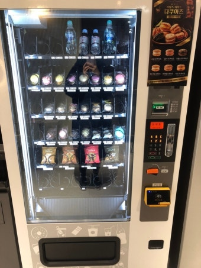
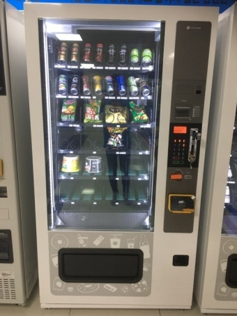
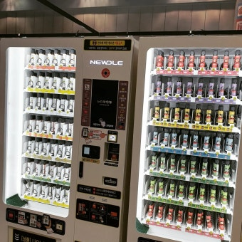
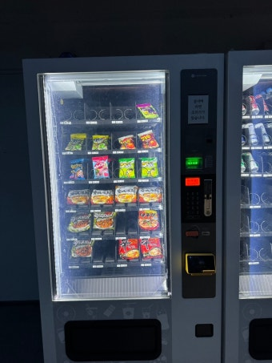
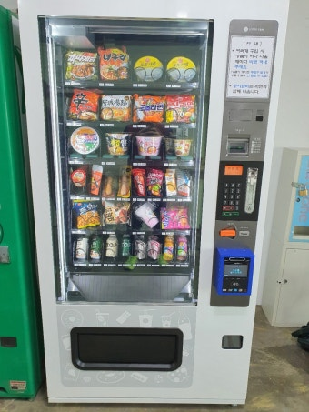
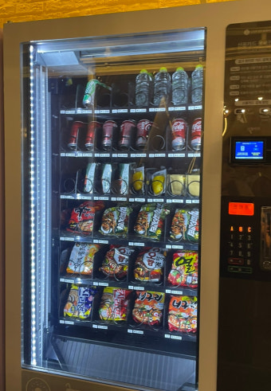

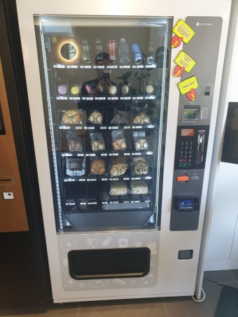
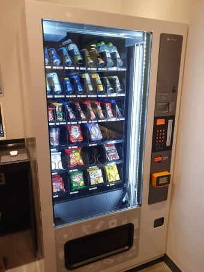
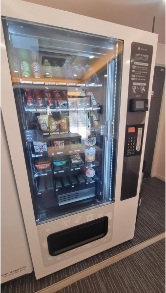

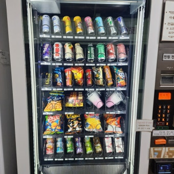
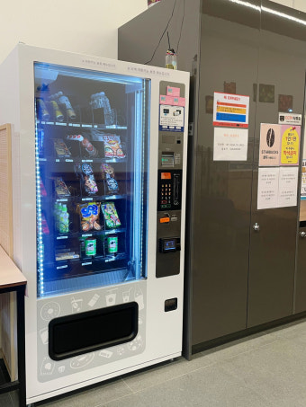
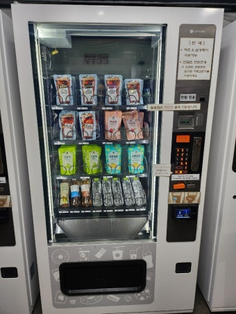
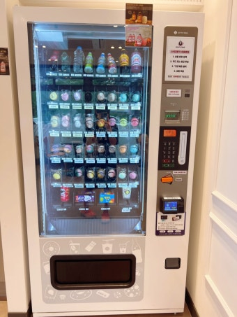
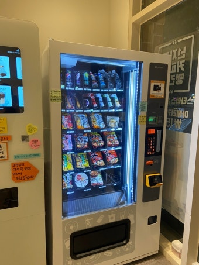
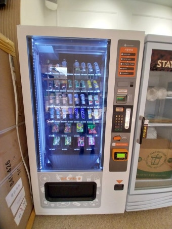

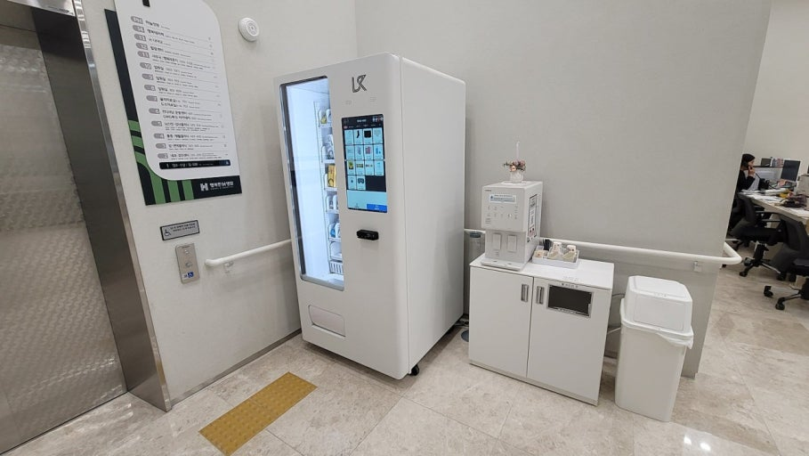

※ 사진은 픽프리가 시공한 실제 설치 현장입니다. 표기된 지역은 현장 사진을 정리할 때 쓴 분류이며, 촬영 장소와 다를 수 있습니다. 기종·대수·배치는 매장 여건에 따라 달라집니다.
자리마다 무엇을 어떻게 채웠는지 자세한 이야기는 설치후기에서 보실 수 있습니다.